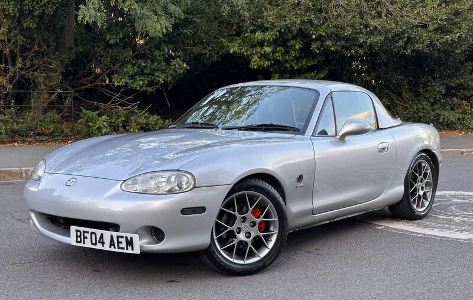
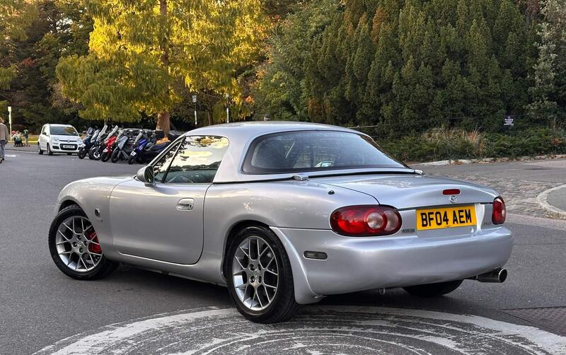
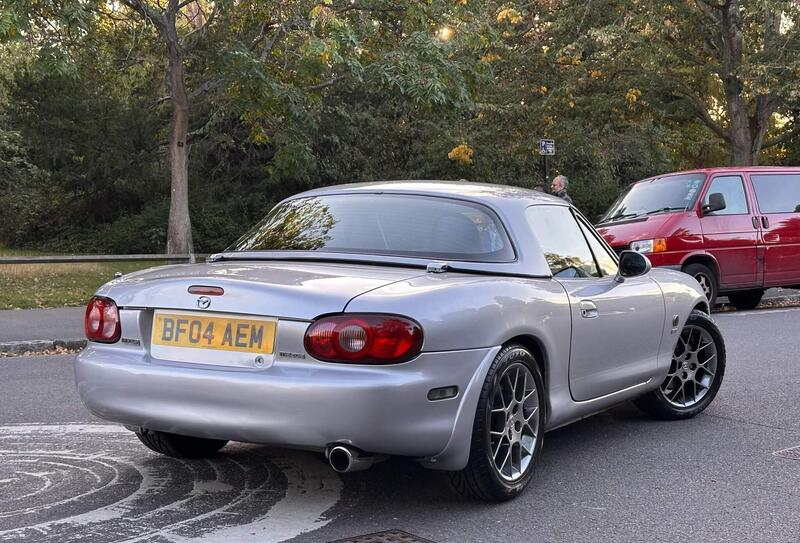

Seller photos from the AutoTrader ad.
2004 MX-5 1.8 Euphonic
A low-mileage Euphonic, but £5,500 is a lot without full history.
Key facts
| Price | £5,500 |
|---|---|
| Year | 2004 |
| Miles | 47,976 |
| Variant | 1.8 Euphonic Limited Edition |
| Edition | Euphonic |
| Engine | 1.8 |
| Colour | Silver |
| Registration | 2004 (04 reg) |
| Owners | 5 owners |
| Seller | Private seller |
| Location | Dulwich |
| From Poole | ~110 mi (estimate) |
| Source | AutoTrader, checked 12 Oct 2026 |
Why buy it
- Low miles for the year
- Euphonic limited edition (1.8)
Things to check
- Service history shown as 'None' on AutoTrader
Service history shown as 'None' on AutoTrader
- 5 owners
5 owners
- Coilovers fitted
Coilovers fitted (search result): check the ride and ask for an alignment report
- Mk2.5 weak spots
Sills, rear arches and chassis rails for rust, the hood seams, and when the cambelt was last changed.
Seller says (extract)
“Purchased in 2019 with only 26,000 miles on the clock, I drove this MX-5 Euphonic daily for around a year and a half. Over that time it completed 22k miles and is now sitting at just under 48,000 miles. Despite this, it still presents as one of the lowest mileage examples you'll find. Anytime I wasn't driving it, it lived on my driveway under its cover. During my ownership it's had the below works & modifications: January 2020 Small sub-woofer (Pioneer TS-WX130DA) professionally fitted by Team Impulse between the seats with controller mounted on dash. (I believe the door speakers were already upgraded by the previous owner. The addition of the small sub really makes the sound system complete.) - £400 March 2020 High Performance 8mm Ignition Leads April 2020 HKB Steering Wheel Boss Kit June 2020 BC Racing BR RS Series Coilovers - 15 clicks of damper adjustability - £900 SuperPro Droplinks - £220…”